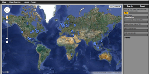

This site showcases the open-source projects of Stuyvesant High School's alumni community. Please peruse and contibute.
If you are a Stuyvesant alum witha project of your own that's at least three-quarters baked, email zamansky at gmail.com so that it can be featured on this site.
| Link | GitHub | Description |
|---|---|---|

|
Closed-source | xmobile is a joint and proprietary venture of the College of Engineering and the Haas School of Business at UC Berkeley, for which I was the first software engineer. It is a mobile platform on which to preform behavioral science experiments. I built it with django, Tastypie, and Android, including geofencing capabilities, timers, persistent memory, and scalability through abstraction. I deployed it on an Amazon EC2 instance. |
|  | pintweets.com is a hacker project I started last August. It maps Tweets using Twitter's search and users/lookup API's, along with Google's Maps and Geocoding API's to map the location of Tweet's based on their Tweeter's stated location. | |

|
I created this site using Jekyll and my fork of Twitter's Bootstrap, and deployed it using GitHub Pages. |
© Stuyvesant High School under MIT License. See the GitHub.